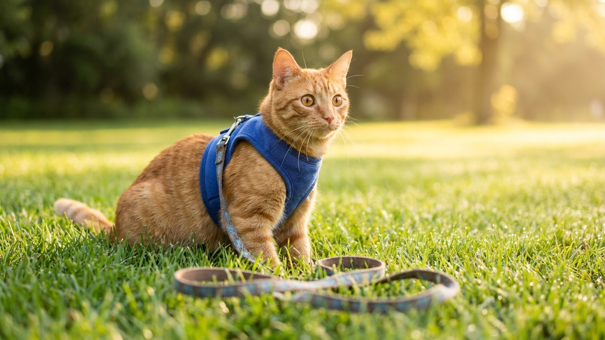

Как приучить кошку к шлейке: пошаговый план за 2-3 недели без стресса

27 мая 2026 · 9 минут чтения · Поведение · Уход · Кошки
Многие хозяева убеждены, что кошка и поводок несовместимы. Это миф. Кошек приучают к шлейке в любом возрасте — от котёнка до 10-летнего кота — при условии, что процесс идёт постепенно и без принуждения. Главное правило: кошка не собака, у неё нет мотивации «угодить хозяину», есть только личный интерес и отсутствие тревоги. Строим на этом.
Зачем кошке прогулки на шлейке
Прогулки на шлейке — не просто развлечение. Это инструмент обогащения среды (environmental enrichment), который снижает хронический стресс у домашней кошки. Исследование Tufts University 2022 года показало, что кошки с доступом к «контролируемой улице» (балкон, прогулка на шлейке, catio) реже проявляют деструктивное поведение — меньше метят, меньше разрушают обстановку, реже болеют психосоматическими расстройствами.
Кроме того, прогулки — физическая нагрузка, которой остро не хватает домашним кошкам. При сидячем образе жизни 47% домашних кошек в России имеют избыточный вес (данные российской ветеринарной сети «Белый клык», 2025). Полчаса на шлейке — это 200-300 шагов и активная работа сенсорики.
Как выбрать шлейку для кошки
Ошибка в выборе шлейки — самый частый камень преткновения. Кошки выскальзывают из неправильных шлеек в секунды, и это создаёт риск потери питомца на улице.
Типы шлеек:
- H-образная (ремённая) — классика, регулируется по обхвату шеи и груди. Хороша для обученных кошек, но при рывке назад кошка может выскользнуть.
- Жилетка (vest harness) — накидывается как жилет, распределяет давление по всему корпусу. Сложнее выскользнуть, комфортнее при рывках. Лучший выбор для начала.
- Римский тип (figure-8) — петля на шее + петля на груди. Плохой выбор: давит на трахею при рывке, схожа с ошейником по механике.
Параметры для подбора:
- Обхват груди за передними лапами + обхват шеи — измерьте рулеткой.
- Между шлейкой и телом должны проходить 2 пальца — плотно, но не давит.
- Материал: мягкая нейлоновая лента или неопрен. Кожа — тяжёлая и жёсткая для кошки.
- Фастексы (застёжки) — должны открываться и закрываться беззвучно или с минимальным щелчком.
Надёжные модели для кошек в 2026: Puppia Soft, RC Pets Step In Cirque, Catspia (корейский бренд), Hurtta Adventure. Стоимость качественной шлейки — 800–2 500 руб.
Шаг 1: знакомство со шлейкой (дни 1-3)
Ни в коем случае не надевайте шлейку сразу. Кошка должна познакомиться с предметом как с нейтральным объектом.
- Положите шлейку рядом с миской или любимым местом отдыха — пусть кошка нюхает, трогает, привыкает к запаху.
- Если кошка подходит и нюхает — поощряйте лакомством (кусочек куриной грудки, лиофилизированные лакомства, паштет в тюбике).
- Не форсируйте — если кошка игнорирует шлейку, это норма. Просто оставьте её лежать.
- На 2-3 день попробуйте поиграть шлейкой как игрушкой — помашите, позвените застёжкой.
Шаг 2: первое надевание в квартире (дни 4-7)
Первое надевание — ключевой момент. Плохой опыт здесь откатывает прогресс на неделю назад.
- Выберите момент, когда кошка расслаблена и немного голодна (перед кормлением).
- Наденьте шлейку быстро и без суеты — отвлеките лакомством в момент застёгивания.
- Первый раз — не более 5 минут. Снимайте до того, как кошка начнёт беспокоиться.
- Сразу после снятия — угощение и игра. Шлейка = хорошее событие.
- Если кошка «замерзает», падает на бок или пытается выбраться — это стресс. Снимите немедленно, сделайте шаг назад к знакомству.
- Каждый день увеличивайте время на 5-10 минут.
Шаг 3: поводок в квартире (дни 8-12)
Когда кошка спокойно ходит в шлейке дома 20-30 минут — пристегните поводок. Длина для начала — 1,5-2 метра (не рулетка).
- Первые дни просто дайте поводку волочиться за кошкой — она привыкнет к ощущению натяжения.
- Возьмите поводок в руку, но не тяните — идите за кошкой, а не ведите её.
- Кошки не понимают команды «рядом» в собачьем смысле — цель прогулки на шлейке: безопасная исследовательская вылазка, а не послушание.
- Если кошка резко останавливается — не тяните, подождите. Если тянет куда-то — следуйте за ней (в разумных пределах).
Шаг 4: первый выход (день 13-18)
Первый выход — во двор, в тихое место, не в час пик. Утро или вечер в будний день.
- Возьмите сумку-переноску — если кошка испугается, она сразу же может спрятаться туда.
- Первый выход — 5-10 минут, не дальше подъезда или ворот.
- Не тащите кошку к траве или «интересному» — пусть она решает, куда идти.
- Если кошка испугалась резкого звука — не успокаивайте «сюсюканьем», говорите спокойно и ровно. Ваше спокойствие — её ориентир.
- Каждую следующую прогулку можно удлинять на 5 минут.
Типичные ошибки хозяев
- Надевать шлейку силой — разрушает доверие за один раз.
- Рулетка вместо поводка — непредсказуемое натяжение пугает кошку, нет контроля в городе.
- Сразу вести на шумную улицу — кошке нужны тихие локации, особенно первые 3-4 прогулки.
- Прерывать приучение на середине — перерыв больше 3 дней откатывает прогресс.
- Использовать ошейник вместо шлейки — при рывке давит на трахею, при испуге кошка выскальзывает.
- Игнорировать сигналы стресса — широкие зрачки, прижатые уши, низкая посадка, хвост под животом — всё это «хватит на сегодня».
Меры безопасности на прогулке
Кошка на шлейке остаётся непредсказуемой — один испуг, и она может вырваться или забраться туда, откуда не слезет.
- Чип + адресник — обязательно до первого выхода. Если кошка убежит, шанс найти её несопоставимо выше.
- Никогда не оставляйте кошку на шлейке без присмотра — может запутаться, перегреться, испугаться.
- Проверяйте шлейку перед каждым выходом — застёжки, крепление карабина к поводку, целостность ткани.
- Прогулка прекращается, если кошка начала дрожать, не двигается или пытается постоянно убежать — не заставляйте «дотерпеть».
← Все статьи · Открыть AnimaLife в Telegram · RSS
Читайте также: Язык тела кошки: что означает хвост · Признаки боли у кошки